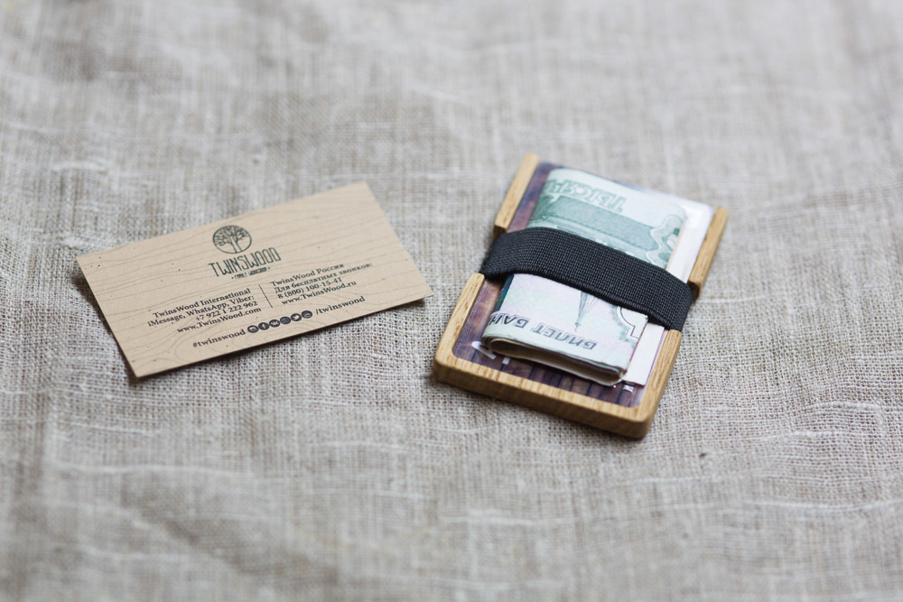

Характеристики
- Древесина - массив дуба
- Размер ВхШхТ - 60 х 94 х 7.2 мм
- Вместимость - 1-6 пластиковые карты и купюры
- Загрузка карт - вертикальная
Эксклюзивный кошелек из ценных пород дерева.
Удобно использовать для хранения банковских и дисконтных карт, а так же бумажных денег. Каждый кошелек уникален, ведь он изготавливается из цельного куска древесины разрез которой ни когда не повторяется. Рисунок волокон создает сама природа, а наши мастера, за несколько часов ручного труда, искусно превращают его в уникальный аксессуар. Этот кошелек создан чтобы подчеркнуть индивидуальность его владельца.
Преимущества кошелька TwinsWood
Уникальный, ни как у всех. Вызывает восторженные взгляды. Компактный, чуть больше пластиковой карты, вмещается в любой карман не оттопыривая его Долговечный, не изнашивается в отличии от кожаных кошельков, со временем становится только красивее Надежный, высокая плотность дерева не позволит деформировать пластиковые карты Экологичный, натуральная древесина легко перерабатывается и не наносит вред природе Безопасный, ни какой химии при обработке готового изделия, антиаллергенное покрытие
Лазерная гравировка, персонализация:
Лазерная гравировка на Вашем кошельке сделает его персональным. Нанесем любой логотип, инициалы, имя или памятную надпись на переднюю часть аксессуара. При добавлении товара в корзину выберите опцию «Лазерная гравировка» в правой части, а при оформлении заказа в поле «Комментарий» укажите необходимый текст гравировки. Менеджер перезвонит и обсудит детали. Готовый продукт обрабатывается специальным составом на основе пчелиного воска и прополиса, который при термообработке глубоко впитывается в структуру древесины защищая ее от ежедневного соприкосновения с одеждой и руками человека.